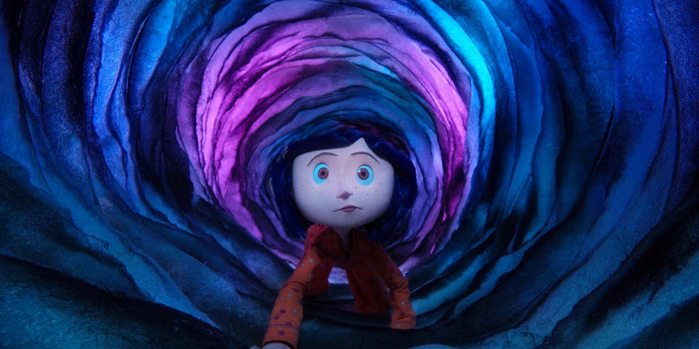
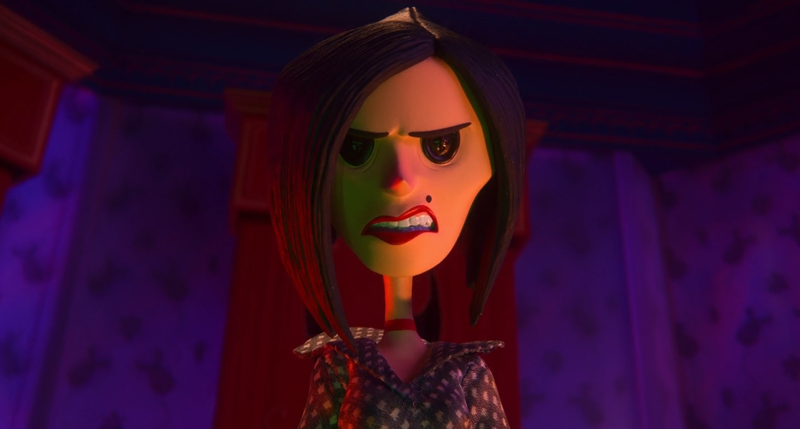
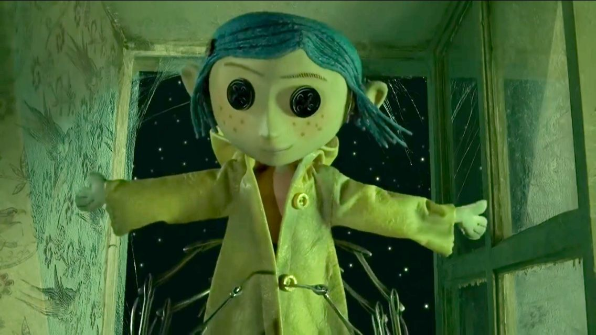

About
Coraline is a 2009 American stop-motion animated dark fantasy horror film written and directed by Henry Selick, based on Neil Gaiman's novella of the same name. Produced by LAIKA, as the studio's first feature film, it features the voice talents of Dakota Fanning, Teri Hatcher, Jennifer Saunders, Dawn French, Keith David, John Hodgman, Robert Bailey Jr., and Ian McShane. The film tells the story of its eponymous character discovering an idealized alternate universe behind a secret door in her new home, unaware that it contains something dark and sinister.
The film was theatrically released in the United States on February 6, 2009, by Focus Features after a world premiere at the Portland International Film Festival on February 5, and received critical acclaim. It grossed $16.85 million during its opening weekend, ranking third at the box office, and by the end of its run had grossed over $124 million worldwide, making it the third-highest-grossing stop-motion film of all time after Chicken Run and Wallace & Gromit: The Curse of the Were-Rabbit. It has developed a cult following in the years since its release, and been considered one of the greatest animated films of all time. With Coraline, Laika became the first company to make a feature-length film using replacement faces made by a 3D printer.
Production
Coraline was staged in a 140,000-square-foot warehouse in Hillsboro, Oregon. The stage was divided into 50 lots, which played host to nearly 150 sets. The Amazing Garden scene was the most complicated set created for the film. The hundreds of handmade flowers were created to grow and move accordingly for when Coraline entered the garden. More than 28 animators worked at a time on rehearsing or shooting scenes, producing 90–100 seconds of finished animation each week.
Every object on screen was made for the film. The crew used three 3D printing systems from Objet in the development and production of the film. Thousands of high-quality 3D models, ranging from facial expressions to doorknobs, were printed in 3D using the Polyjet matrix systems, which enable the fast transformation of CAD (computer-aided design) drawings into high-quality 3D models. The puppets had separate parts for the upper and lower parts of the head that could be exchanged for different facial expressions, and the characters could exhibit over 208,000 facial expressions.
At its peak, the film involved the efforts of 450 people. Principal photography took 18 months. One crew member, Althea Crome, was hired specifically to knit miniature sweaters and other clothing for the puppet characters, sometimes using knitting needles as thin as human hair. A single garment could take anywhere from six weeks to six months to complete. The clothes also simulated wear using paint and a file.
Music
The album featured the original score composed by Bruno Coulais, who worked on the film for over a year, and was recorded at several places including Paris, Budapest, Los Angeles and Cincinnati. The score was performed by the Hungarian Symphony Orchestra and features choral pieces sung by the Children's Choir of Nice in a nonsense language. The main soloist, a young girl heard singing in several parts of the film, is coincidentally named Coraline.
The soundtrack was released by Milan Records on February 3, 2009, featuring 32 tracks; also included are three songs specifically written for the film, with an original song performed by the alternative rock band They Might Be Giants, who were supposed to contribute several original songs for the film, before they were excluded. Coulais' score received critical acclaim and won the Annie Award for Best Music in an Animated Feature Production in 2009.